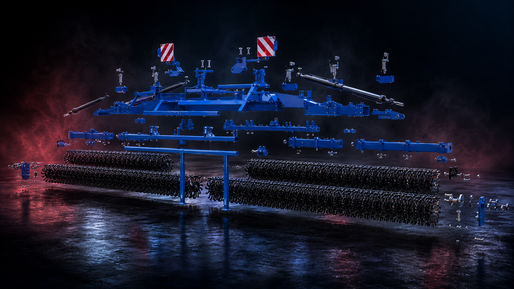

Rotační plečka
PlantCare
Rotační plečka pro mechanické omezení plevelů bez závislosti na šířce meziřádků. Tři modely kombinují vysokou plošnou výkonnost, odolné pracovní hvězdice a plynulé vedení hloubky.
záběr 6,5–12,2 m
mechanická likvidace plevelů
90–160 k

Technické údaje
Modely PlantCare 650 až 1220
Pracovní záběr roste od 6,5 do 12,2 metru společně s počtem hvězdic a požadavkem na výkon traktoru.
| Model | Záběr | Hmotnost* | Pracovní hvězdice | Výkon traktoru |
|---|---|---|---|---|
| PlantCare 650 | 6,5 m | 2 100 kg | 72 | 90 k |
| PlantCare 940 | 9,4 m | 3 000 kg | 104 | 120 k |
| PlantCare 1220 | 12,2 m | 3 900 kg | 136 | 160 k |
* Hmotnost je orientační a může se měnit podle zvolené výbavy.
Scroll visual
PlantCare rozložená na konstrukční celky
Posouvejte stránku dolů. Složená plečka se plynule promění v explozní pohled: rám, pracovní hvězdicové sekce, hydraulické prvky, držáky a bezpečnostní tabule.

Rám
Hvězdice
650 cm záběr
Hydraulika
Standardní konstrukce
Mechanická péče s přesným vedením
- Pružinový přítlak jednotlivých hvězdic až 20 kg
- Hydraulické skládání do přepravní polohy
- Opěrná kola s plynulým nastavením pracovní hloubky
- Ochranná síť proti odletujícím kamenům
- Opěrné patky pro bezpečné odstavení
- Práce bez vazby na konkrétní meziřádkovou vzdálenost
Další mechanická péče
Profi, Grasser a Weeder Light
Porovnejte další stroje Landstal pro mechanické omezení plevelů, provzdušnění porostu, regeneraci luk a přísev.